Graduate Exhibition 2009, UCT Michaelis School of Fine Art, Cape Town, South Africa.
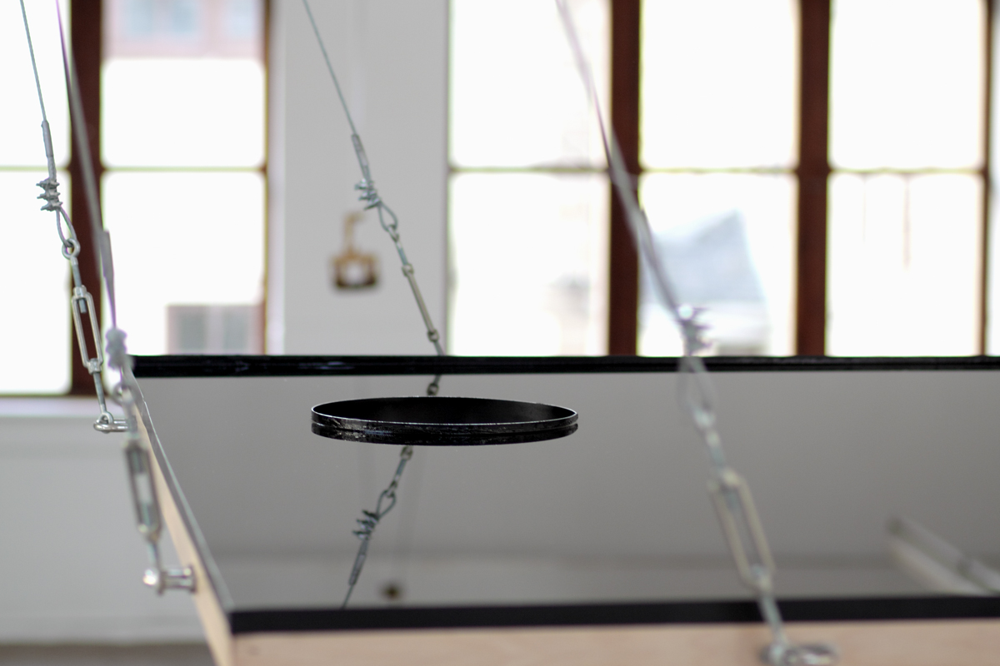
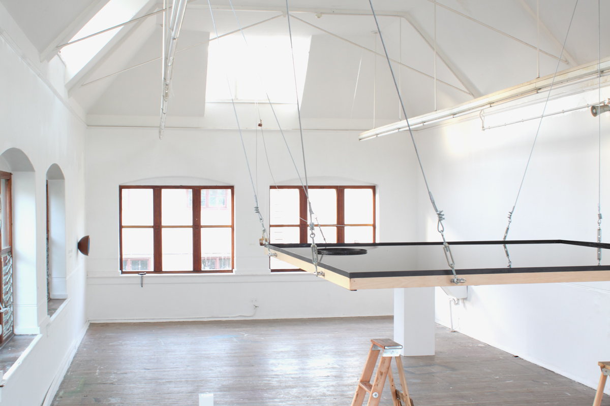
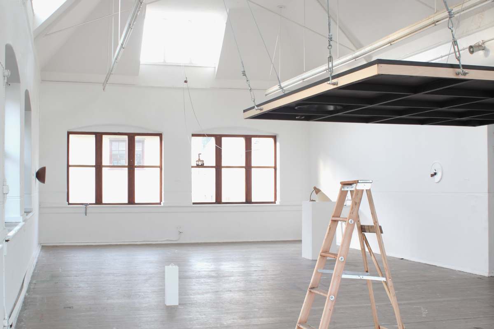
Your Sky Used Engine Oil, Wood 244 x 244 x 25cm 2009
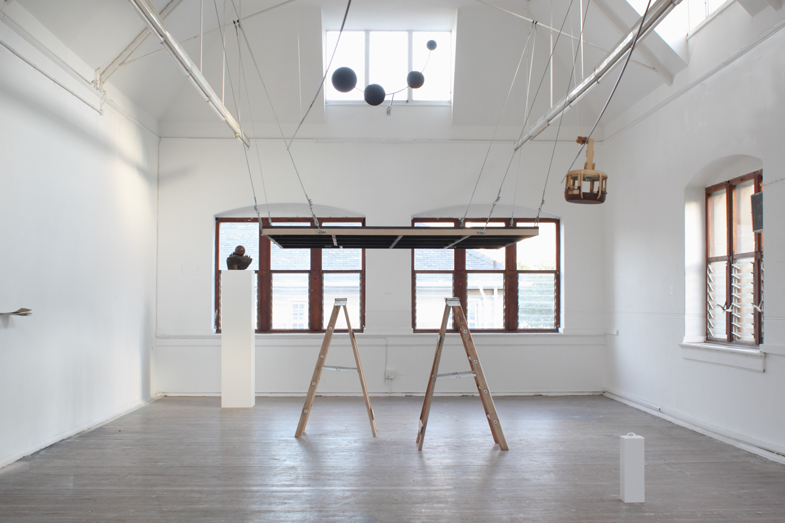
Installation View
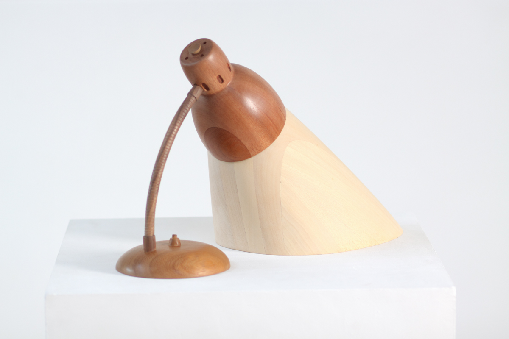
A Romance of Many Dimensions Jelutong, Obechie, Walnut, Iroko 33 x 47 x 26cm 2009
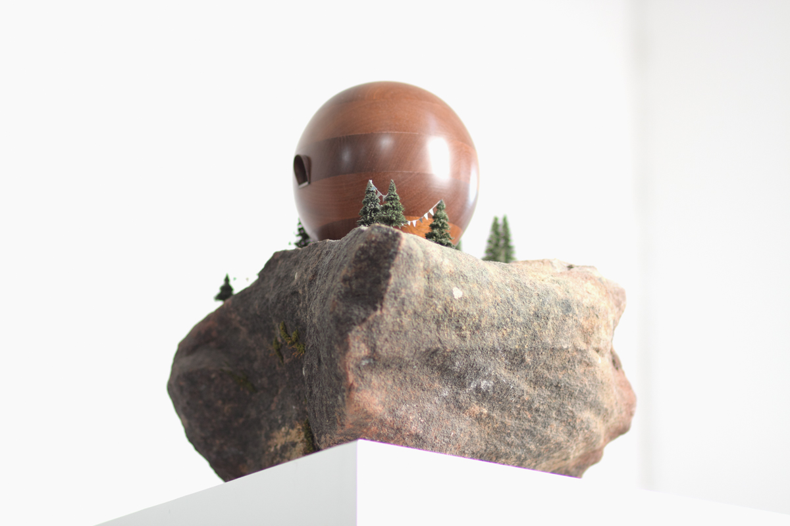
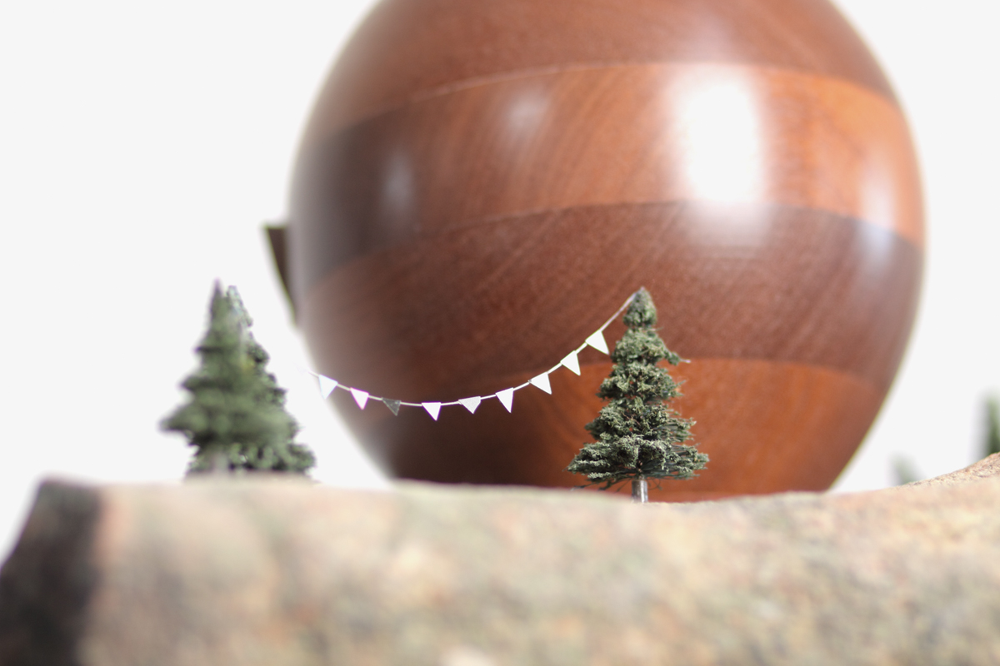
To Maclear's Beacon Mahogany Sapele, Model Pine Trees, Found Rock 35 x 33 x 29cm 2009
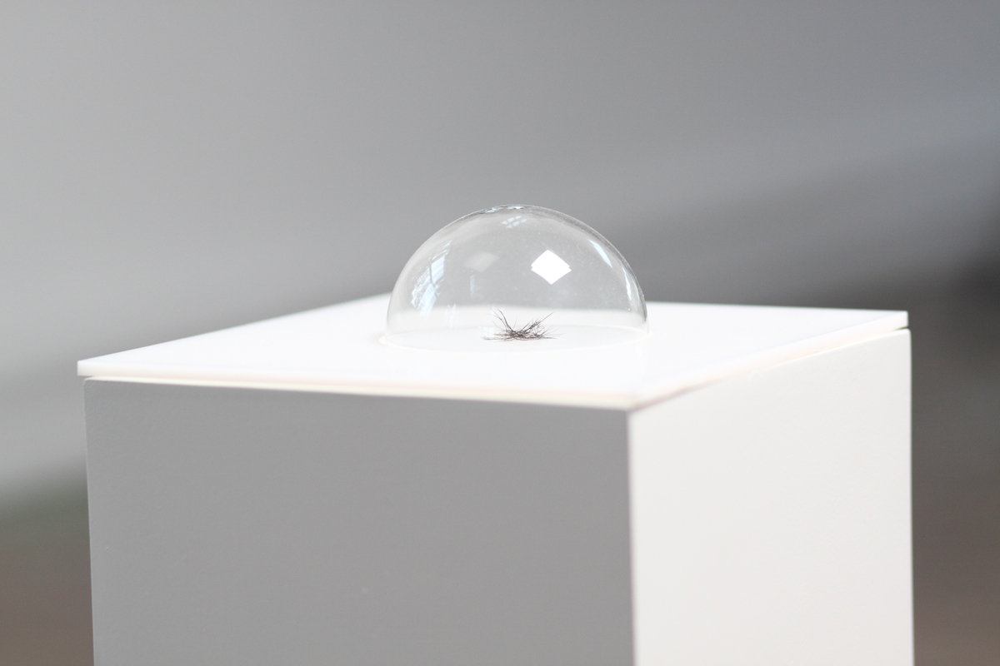
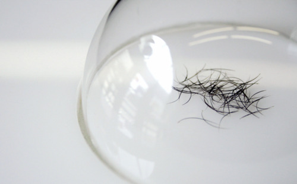
I Believe 62 Found Eyelashes 14 x 15 x 4cm 2009
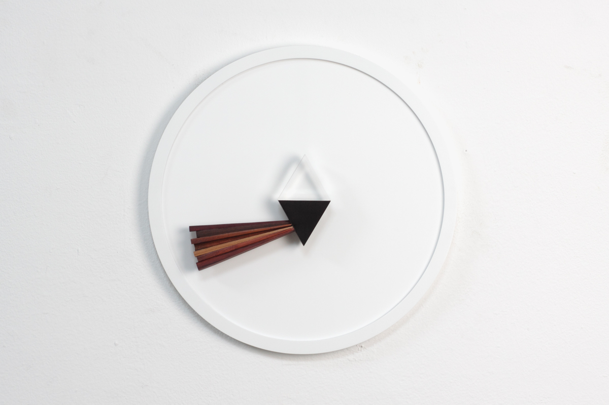
Untwisted All the Shiny Robe of Day Prism, African Black Wood, Etimoe, African Rose Wood, Sycamore, Red Wood, Iroko, Tropical Olive, Purple Heart Dimensions Variable 2009
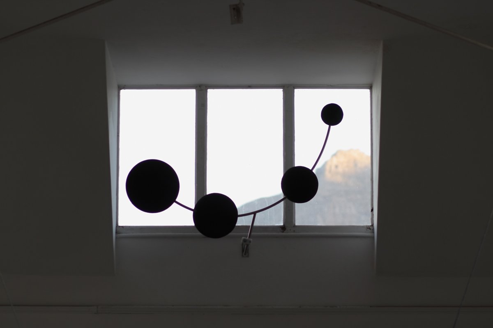
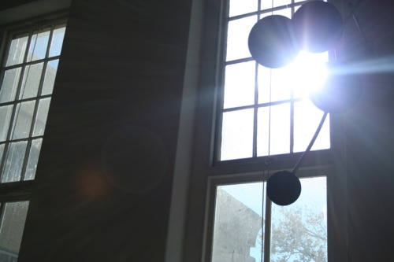
The Black Suns of Your 9 o'clock Eclipse Coal, Stainless Steel Dimensions Variable 2009
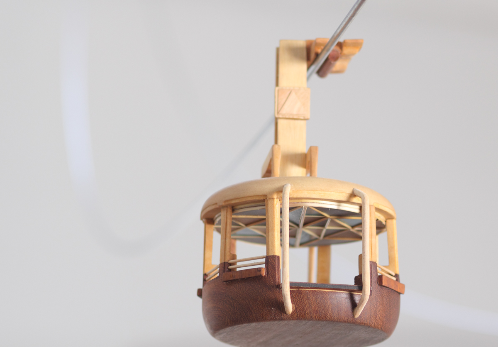
Following the Light of the Sun, We Left the Old World Mixed Wood Dimensions Variable 2009
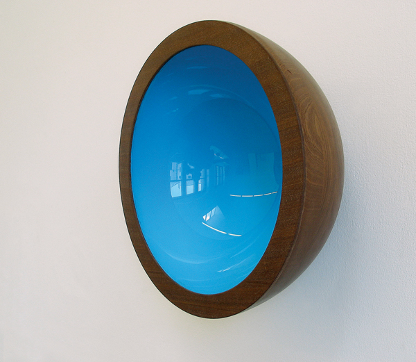
If the Doors of Perception Were Cleansed Mahogany Sapele, Perspex 36 x 36 x 17cm 2009